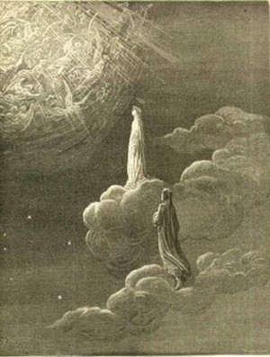

Obra de Dante
O Paraíso
O paraíso da Divina Comédia é estruturado em nove esferas, e as almas estão distribuídas de acordo com a graça alcançada. Virgílio e Dante se separam. O poeta começa a jornada para o Empíreo com Beatriz, onde Deus habita.
Primeira Esfera (Lua)
As manchas na Lua representam aqueles que falharam nos votos de castidade. Beatriz explica o valor dos votos perante Deus e o que a alma pode fazer para compensar sua falha. Eles partem para a segunda esfera, onde encontram vários espíritos ativos e benéficos.
Segunda Esfera (Mercúrio)
O espírito do imperador Justiniano informa a Dante que em Mercúrio estão aqueles que deixaram grandes obras de ação ou pensamento para a posteridade. O poeta questiona por que Cristo escolheu o destino da cruz como salvação. Beatriz explica a doutrina da imortalidade da alma e da ressurreição.
Terceira Esfera (Vênus)
A esfera de Vênus é o destino dos amantes que conseguiram dominar sua paixão. Dante encontra Carlos Martel, herdeiro do trono húngaro, que expõe dois casos contrários em sua própria família. Depois, ele encontra Fulco de Marselha, que destaca os pecados de Florença, especialmente a ganância do clero.
Quarta Esfera (Sol)
Na quarta esfera, encontram-se os doutores em teologia e filosofia. Diante das dúvidas de Dante, os sábios respondem e ensinam. Santo Tomás de Aquino esclarece a superioridade de Adão e Jesus Cristo em relação à sabedoria de Salomão. Ele também fala de São Francisco de Assis. São Boaventura elogia São Domingos.
Quinta Esfera (Marte)
A quinta esfera é Marte. É dedicada aos mártires do cristianismo, considerados guerreiros da fé. As almas dos mártires são luzes que se aglomeram formando uma cruz. Beatriz elogia os que caíram nas cruzadas, e Dante encontra seu antepassado Cacciaguida, que foi cruzado. Este prediz o exílio de Dante.
Sexta Esfera (Júpiter)
É a esfera dedicada aos bons governantes, onde Júpiter funciona como alegoria (como deus dos deuses gregos). Lá, Dante encontra os grandes líderes da história considerados justos, como Trajano, de quem uma lenda diz ter se convertido ao cristianismo.
Sétima Esfera (Saturno)
Saturno, a sétima esfera, é onde repousam aqueles que fizeram uma vida contemplativa na Terra. Dante conversa com São Damião sobre a doutrina da predestinação, o monasticismo e os maus religiosos. São Bento também expressa sua decepção com o destino de sua ordem. Dante e Beatriz iniciam a passagem para a oitava esfera.
Oitava Esfera (Estrelas)
A oitava esfera corresponde às estrelas da constelação de Gêmeos, que simbolizam a Igreja Militante. Lá aparecem Jesus Cristo e a Virgem Maria, cuja coroação ele testemunha. Beatriz pede para Dante o dom do entendimento. São Pedro o questiona sobre a fé; Tiago, sobre a esperança, e São João Evangelista sobre o amor. Dante sai vitorioso.
Nona Esfera (Cristalino)
O poeta avista a luz de Deus, cercado por nove anéis de cortes celestiais. Beatriz explica a Dante a correspondência entre a criação e o mundo celestial, e os anjos são descritos seguindo os ensinamentos de São Dionísio.
Empíreo (Deus, Anjos e Beatos)
Dante sobe, finalmente, ao Empíreo, um lugar além do mundo físico conhecido, a verdadeira morada de Deus. O poeta é envolvido pela luz e Beatriz é revestida de incomum beleza. Dante distingue uma grande rosa mística, símbolo do amor divino, na qual as almas santas encontram seu trono. Beatriz obtém seu lugar junto a Raquel. Dante é conduzido em sua última etapa por São Bernardo. A Santíssima Trindade se manifesta a Dante na forma de três círculos idênticos. Depois de ser iluminado, Dante compreende o mistério do amor divino.